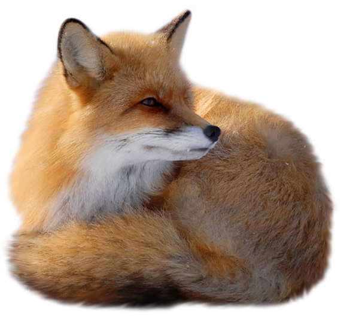
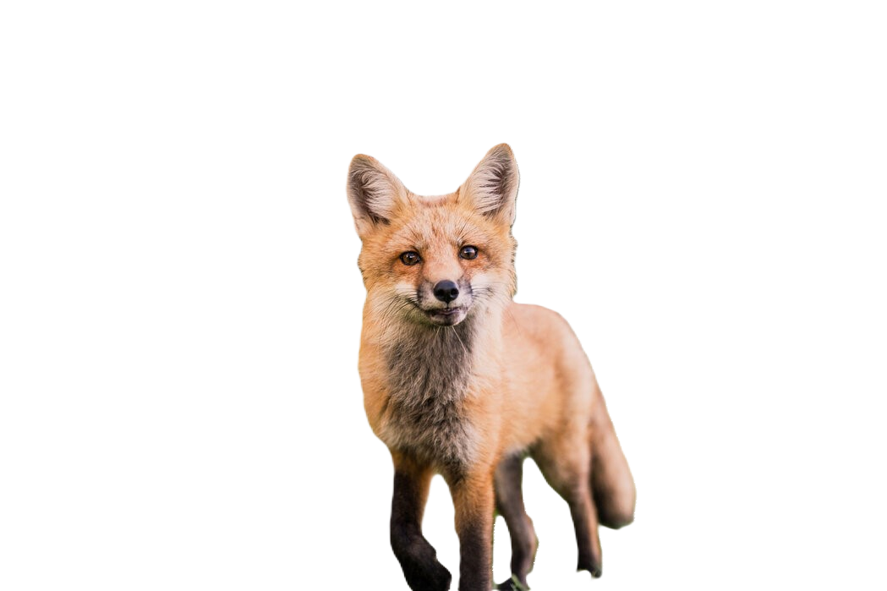
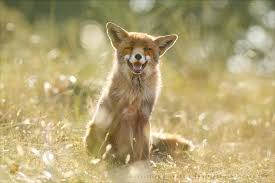

Call of the Wild...
Outside the forest, there lived a curious fox named Felix. One day Felix was curled up, laying around feeling low, like something was missing.
Something wakes him up, and makes him feel an all-too-familiar feeling...
See where Felix goes!
The Adventure Begins
A feeling arises, and his senses go wild. Almost as if mother nature called to him. Curious, Felix gets up and investigates!
Follow Felix to the forest!
A Familiar World
He realizes his senses brought him to a familiar place - his home, the forest! As Felix steps under the tree cover, the world transforms around him. He had forgotten about the forest for a moment, and was reminded of the sparkle of the light on the leaves, the earth beneath his feet, the smell of all the trees and foliage. He runs around in joy, watch him go!

End of story!
The End
Felix is now happy, back in his home. The forest is his calling, and sometimes he just needs to be reminded of that! He feels rejuvenated, and happy back in his element.
